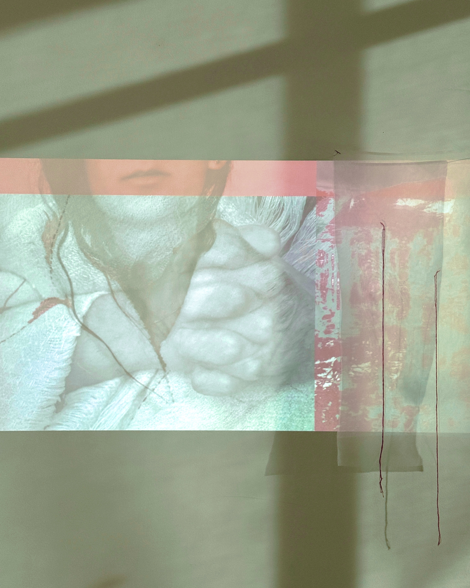

Statement
Artist Statement
Art has always been my way of navigating the mind, a conversation between what I carry and what making allows. My practice begins with self observation: quiet shifts of anxiety, the heaviness of silence, moments of rupture and repair. It becomes a sanctuary for exploring identity and visibility as an inner landscape where light and shadow coexist. The work is rooted in duality, the desire to be seen and the impulse to disappear. I trace emotional states that are difficult to name, drawn to what cannot be easily seen: tension in the body, thoughts looping beneath the surface, resilience forming in ordinary acts. Through different mediums, and the interplay of presence and absence, I create structures that reveal and conceal at once, holding vulnerability and strength in the same space.
Selected Works
